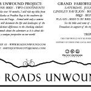
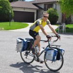

A New Mapping Option
In an effort to eliminate something from my Seattle to-do list I discovered an additional mapping format (still through spot) for displaying my adventure and following my progress on a map. I was looking to contact Spot about saving my trip locations for further use at the end of the trip when I found their […]
Hooray – New photos from around Seattle!
Check out some new photos from my wondering around Seattle yesterday and today. Both days were the kind of sunny days that are rare this time of year in Seattle. The first part of the series is a new exploration of some sepia-toned images. For those of you unfamiliar with the Seattle area, the last […]
Updates in the pipeline:
Stories of our travels from Banff to Vancouver will be arriving shortly, and include a tale about Nathan’s bike falling from the roof of a moving car, some of my stuff being stolen (then returned), and more fun items. We are in Whistler for a quick lunch and look around, then on to Squamish to […]
Away I Go!
The bags are packed, the bike is tuned and ready, and the northern reaches of Alaska are beckoning. One day’s journey up to Prudhoe Bay and then the whole adventure will begin. I can’t say enough about the time I have spent in Alaska so far. First, this state lives up to all the hype. […]
Being Tested
I have about a week to go before beginning my journey and I have already been tested on my patience, ability to resolve problems, and keep a positive view in the face of adversity. Just before leaving Bozeman I decided to upgrade to the premium touring tire from Germany. At a significant cost, I hope […]
And So It Begins
Alaska began for me like so many trips, my head buried deep in a book trying to put the stress of departure and the anxiety of the new trip in the back of my mind. We were traveling at 30,000ft and had been looking at a sea of white clouds for some time, when I […]
Quote
“If you hear a different drummer – dreamer, take a chance. The road you choose to travel means the difference in the dance.” – D. Morgan, artist and poet
Bid Me Farewell
SATURDAY – JULY 10 – 4 to 10pm LINDLEY PAVILION – BOZEMAN, MT The final plans for the farewell / good luck party I am throwing myself are getting cleared up. Here is what I know as of now. The Lindley Pavilion is reserved for the event from 3:30 to 10:30, so after I get […]
Grand Send-off Party!
I have made a reservation for the Lindley Pavilion on July 10th for some good summertime fun as a send-off party before I leave for my trip. There are plans in the works that will most likely start at 4pm and involve beer, bbq, bikes, outdoor games (olympic / field day) and some great company. […]
My Trusty Steed!
Here is the trusty bike that will whisk me to the far corners of the earth. It is a Surly Long Haul Trucker frame with a Kona fork, and a new Brooks leather saddle. The bags are from Pacific Outdoor Equipment, a proud sponsor. I am brainstorming appropriate nicknames, but won’t decide on one until […]
Fantastico!
It is 5:30 am on the summer solstice and although the sun has yet to rise, it has been light out now for over an hour. When I awoke awhile ago I started to go through the countdown of my last few weeks before my trip, and realized that I am down to less than […]
Thanks to all the new Facebook fans!
Thanks to everyone who has navigated over here from Facebook. I hope to see some of you this upcoming Friday at the Nova Cafe in Bozeman for the start of the art walk season. If not, I hope you enjoy following along on my upcoming adventure. Thanks for the support! Justin
New Exhibit
Briefly, I just got done putting up an exhibit at Nova Cafe in Bozeman. Take a moment to go enjoy some great breakfast and look at my work. If you can’t make it during the day, stop by on Friday evening for the first Art Walk of the season and say “Hi”. I will update […]
Having been robbed. . .
Maybe it is too much of an attention grabbing title, but it is not entirely untrue. Having been robbed my last time across the Ecuador-Peru boarder crossing on the Pan-American Highway, I have always been dreading a return to that fateful city. Last night I was browsing through my usual collection of travel blogs from […]
Long training ride!
It is 8:30 Saturday morning and I have finished my coffee and a few eggs. I have been extra busy lately and as a result I have not been on my bike in a while. It is terrible, and I feel truly guilty. How can I possibly managed an 18 month bike ride if I […]
Fascinating Article
I just found this interesting article by Olivia Judson at The New York Times about the impacts of development and expansion on biodiversity. Please read and enjoy. “Divide and Diminish”